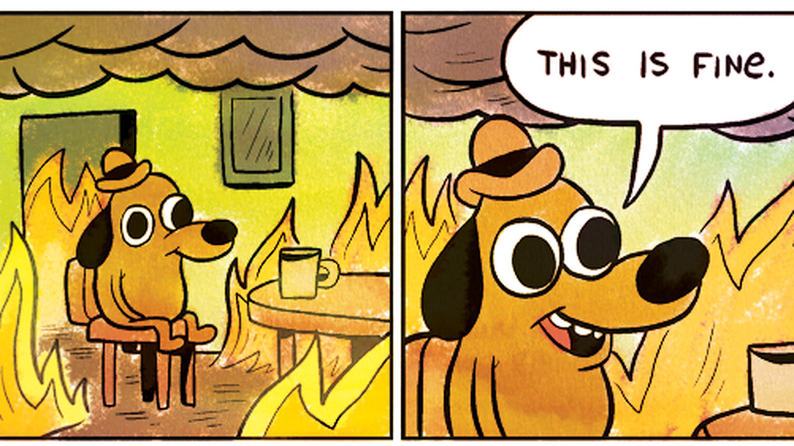
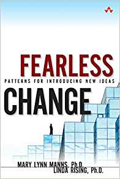
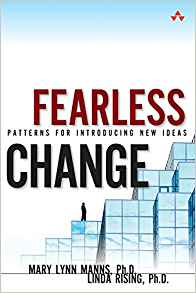

Next Steps
A Few Gray Hairs
- Jess is now 40
- Frustrated that their work isn't recognized or rewarded
- Simulator has almost a thousand users worldwide, many in agriculture and local government
- But their promotion still depends on research paper publications
Stay the Course
- Option 1: continue to suffer

- Surprising how many RSEs choose this
Option 2: Raise More Funding
- https://github.com/nayafia/lemonade-stand outlines a variety of options
- You've probably already thought about all of them
Option 3: Commercialization
- Initial business model is a mix of:
- Charging for intensive tutorials and follow-up consulting
- Adding features
- Using the software on others' behalf
- Jess must either become an entrepreneur or find a business partner
- Knows enough to avoid tech transfer offices at universities and government labs
- Non-research developers encountered through open source are a better source of advice and contacts
Do Good and Get Paid
- Commercialization is not selling out (despite mutters from some senior colleagues)
- Given the uncertainties of government funding, it is the best way to ensure the long-term survival of the simulator
- And it frees up funding for projects that can't get industry support
Option 4: Change the Game
- Help build a community that can push for organizational change
- Get involved in grant review
- Spend the social capital they've earned to run for a position in their professional body
- Yes, it means more committees and less time doing research...
- ...but the alternative is the next generation of researchers having fewer options and opportunities
 

Option 4: Change the Game
- And yes, it's like rolling a very large rock up a very steep hill
- But the social structures of research have changed many times in the last century
- They're going to keep changing
- You can help them change for the better
Choose Your Goal
- Be sure this is where you want to focus your efforts.
- It's going to take years
- It could well fail
- There are many other things you could do
Nihil Pro Nobis, Sine Nobis
- Nothing about us, without us
- I.e., always ask those who will be affected
- Often turns up potential allies
Be Specific
- Few people would argue (in public) against fair hiring practices in principle
- But the organization has to implement something specific
- People very well might argue against those specifics
- Start with whatever is likely to have broadest support
- Success breeds success
Power Mapping
- Who has the power to make the change?
- What do they care about?
Your neighbors don't make policy for your local public school: school board trustees do, so that's who you need to influence.
- Help someone who wants the same change as you get elected
- Help someone who doesn't oppose your change in exchange for support for your cause
Power Mapping
- Figure out who is going to be negatively impacted by the change you want and?
- Change their mind
- Reduce the impact
- Make it up to them
- Sideline them
- Change doesn't have to be a zero-sum game, but it isn't purely additive either
Build Alliances
- "I'll help you if you'll help me" makes the world go around
- Hard when people want the same thing for very different reasons
- But this is not cynical
- People whose beliefs are aligned may still have different priorities
- Conversely, some people will never be your allies
- If everyone wanted it, you wouldn't have to push for the change
- People with a lot of social capital are particularly useful allies
- But always look at how they accumulated that capital
Test the Waters
- Refine your idea and presentation in front of a small group
- At every stage
- "Refining your idea" sometimes means accepting that you wanted the wrong thing
- Sometimes useful to have an official skeptic
- Giving them a way to critique in private may temper their public criticism
- And you just might convert them
- But remember: the devil doesn't need more advocates
Keep It Visible
- It's easy to blog and tweet
- But that same ease has reduced these channels' impact
- Borrow legitimacy
- Is there a newsletter you can be included in?
- Can you make a presentation as part of some other event?
- Can you get someone well-known to mention what you're doing?
- Can you post notices in the lunchroom? The elevator? The washrooms?
- Always share a single point of contact that someone checks frequently
Collect Data but Tell Stories
- Sooner or later someone is going to ask what financial impact this change is going to have
- Be ready for that
- But data isn't as powerful as stories
- Don't explain what kind of people this will help
- Explain how it helped (or would help) a specific person
- "If you've never cried when telling that story, tell a better story."
Mark the Seasons
- Burnout is an occupational hazard for everyone trying to make meaningful change
- In part because we get used to doing things on our own
- And don't share the load even when we can
- "Celebrate when you can, grieve when you need to."
- Not all of your allies will become your friends
- But those who do will be able to share your victories and commiserate with your defeats like no one else
Two Modest Requests
- Please decline to take part in conferences that don't support fully-remote participation [Skiles2021].
- Please ask leadership candidates in your professional society:
- What steps will you take in your first year in office to ensure that less affluent researchers have an equal opportunity to publish their work?
- What specific changes will you make to grant and promotion review procedures to ensure that computational work is properly rewarded?
- What specific curriculum guideline changes will you recommend to ensure that the next generation of researchers are properly prepared to engage in computational work?
Those Emails
- Replace one of the questions on the previous slide with a better one.
- Send those emails.